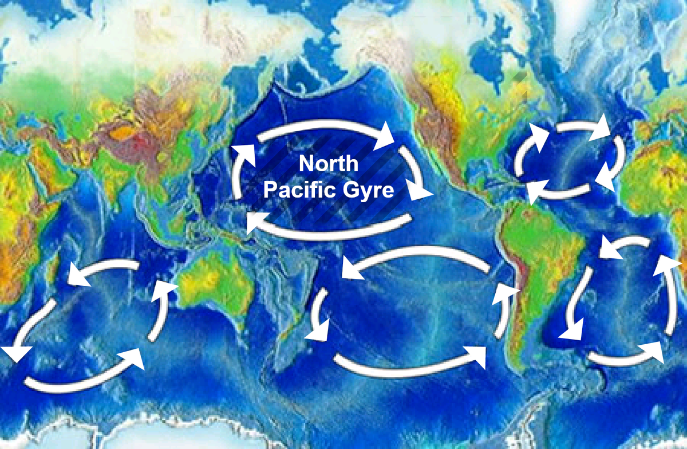

log in


Have you ever heard of the term plastic soup?
It doesn’t sound too appetising, does it? Plastic soup is a real problem with real consequences, that we have to confront and deal with. The issue is increasing on a daily basis, endangering ecosystems, animals and even our health.
What is plastic soup?
Plastic soup refers to the huge accumulation of plastic waste that has been thrown away and has ended up in the ocean. As plastic does not degrade biologically, the plastic soup keeps growing in mass. The biggest concentration in the world was found in the North Pacific gyre, one of the five biggest ocean gyre’s in the world. In fact, it is the largest ecosystem in the world and now, due to the way we dispose of plastic and our overconsumption of the material, actual islands of plastic have formed in this area.

Even worse? It’s growing drastically. Due to the effects of sunlight, changing weather conditions and the strength of the waves amongst other things, the piles of plastic debris reduce to tiny particles that pollute the majority of our oceans. What happens is these tiny particles then make their own journey around the world through different currents and eventually fish eat them, whether they mistake larger pieces of plastic for food or simply swallow small particals when eating other fish, plastic ends up in their stomachs.
What are the effects of plastic soup?
Due to the fragmentation of plastics and the increase of small plastic particles, the ocean is slowly but surely transforming into one large polluted plastic soup. As a result, toxins and other poisonous gasses that the plastic pieces pick up on their way to the ocean (think of sewers) are releasing from the particles and are spreading widely. As mentioned, our marine animals and all other living organisms tend to mistake plastic for food and end up eating debris. Unconsciously they ingest the microplastic that’s floating around in their habitat.
So how does if effect us? Plastic soup can seriously damage our environment, not just as poisonous gases spread and reach land, but also when we eat fish with plastic and micro-plastics in them. By ingesting small plastic particles, our bodies can come into contact with different toxic substances. These substances could influence our hormone levels and some have suggested a link between children’s development issues as well as higher risks of blood pressure related concerns.
Some marine animals, like seals, whales, dolphins and sea turtles get stuck in pieces of plastic soup and end up dying on the spot. This poisonous waste only causes destruction and pollution and needs to be tackled as soon as possible.
How can we prevent the increase of plastic soup?
We are the main culprits of plastic soup, and as a result, we should also be the ones to solve it. You may think that as one individual among seven billion others, won’t make much of a difference, but we have to start somewhere. Baby steps in the right direction is the only way to go. And while you’re working on a better planet, try spreading awareness so the people around you learn about the increase and dangers of plastic soup and, hopefully they will join you in your actions to reduce plastic waste. Little things can be of major help in this cause.
Make sure not to buy any disposable plastic bags in the grocery store anymore. Instead, bring your own shopping bags, preferably ones made out of fabric. Also, take some smaller reusable bags to put your fruits and vegetables in. Make sure to have a couple in your car, so you always have some with you. Try to skip the use of disposable products like plastic straws, make-up wipes and other kinds of cleaning wipes. Encourage the brands that have chosen to wrap their products in environmently friendly packaging (such as paper or cardboard) and buy their products instead of the brands that still use plastic packaging.
Waste2Wear fights against the plastic soup
An astonishing eight million tons of plastic waste enters the oceans every year. This is unacceptable and we are determined to do something about it. By applying our skills and expertise in plastic waste recycling technology we develop solutions to transform plastic waste into new textiles. By picking up plastic in our clean-up programs, we are preventing these plastics from reaching the ocean.
Let’s reduce plastic waste together
Source: www.waste2wear.com